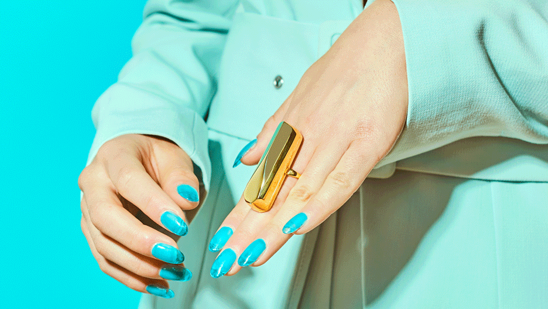

|  | Their latest launch, out today, adds to their fashion-forward repertoire while taking innovation to the next level. It’s a sculptural metallic vibrator ring, called Palma. “We wanted to create a piece that stood on its own as a beautiful accessory, but also packed a punch,” Rodriguez explains. “After over a year of sketching and drawing, we landed on a geometric-shaped ring. From there, we had to put together the circuit board and feature settings that would distinguish it as more than just a motor-based ring vibrator.” Utilizing patent pending haptic technology, Palma offers five unique vibration settings: low, medium, and high; then a setting that allows you to tilt the ring to gradually increase the vibration strength, and finally, a fully customizable setting in which you simply tap the surface of the ring to create your own vibrational pattern. “We made Palma a wearable because we hope that it will do what cocktail rings have long been known for—starting a conversation,” Rodriguez says. “We can't continue pretending that sexuality and sexual identity are only allowed to exist behind closed doors.” Whether employed in the bedroom or out in the real-world as a sartorial expression, or both, Palma proves that the future of sex accessories is equal parts statement-making and O-inducing. |